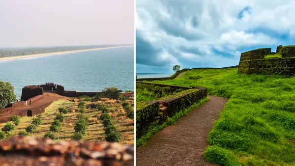
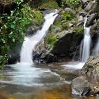
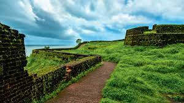
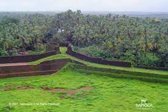
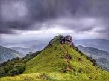

The northernmost district of Kerala, Kasaragod is famous for its handlooms and its 293 kilometre long coastline. With its cultural uniqueness, the place is known as the land of gods. Rich in history, Kasaragod is home to the largest and best preserved fort in the State
Bekal-Fort



Kasaragod boasts of the largest and best preserved Fort in the whole of Kerala, bordered by a magnificent beach. Shaped like a giant keyhole, the historic Bekal Fort was built in the 17th century. This historic monument offers a superb view of the Arabian Sea from its tall observation towers, which were occupied by gigantic cannons till afew centuries ago.
Near the Fort is an old Mosque that is said to have been built by Tipu Sultan of Mysore. Originally constructed by the rulers of the ancient Kadampa Dynasty, the Fort changed hands over the years to the Kolathiri Rajas, the Vijayanagara Empire, Tipu Sultan and finally, the British East India Company.
Today, the Bekal Fort and its scenic surroundings are fast becoming an international tourist destination and a favourite shooting locale for film makers.
Ananthapura Lake Temple

Ananthapadmanabhaswamy Temple or Ananthapura Lake Temple is a Hindu temple built in the middle of a lake in the little village of Ananthapura, around 6 km from the town of Kumbla in Manjeshwaram Taluk of Kasaragod District of Kerala, South India. This is the only lake temple in Kerala and is believed to be the original seat (Moolasthanam) of Ananthapadmanabha Swami (Padmanabhaswamy temple) Thiruvananthapuram. It is considered one among the 108 Abhimana Kshethram of Vaishnavate tradition. Legend has it that this is the original site where Ananthapadmanabha settled down.[1][2] Babiya, a crocodile who lived in the lake, was also famed for being vegetarian. She died aged 75 on October 9, 2022. It is believed that she ate only temple offerings that were served to her twice a week and never harmed a single human.
Ranipuram-Hills

Dubbed as the "Ooty of Kerala", Ranipuram hills is renowned for its cool climate, deep woods and enthralling trekking trails. The luxuriant grasslands, the dense evergreen forests, and the cold breeze make Ranipuram hills an instant favourite among the tourists
Chandragiri fort
Chandragiri Fort is a fort built in the 17th century, situated in Kasaragod District of Kerala, India. This large squarish fort is 150 feet above sea level and occupies an area of about seven acres the adjacent to Chandragiri river. The fort is now in ruins.